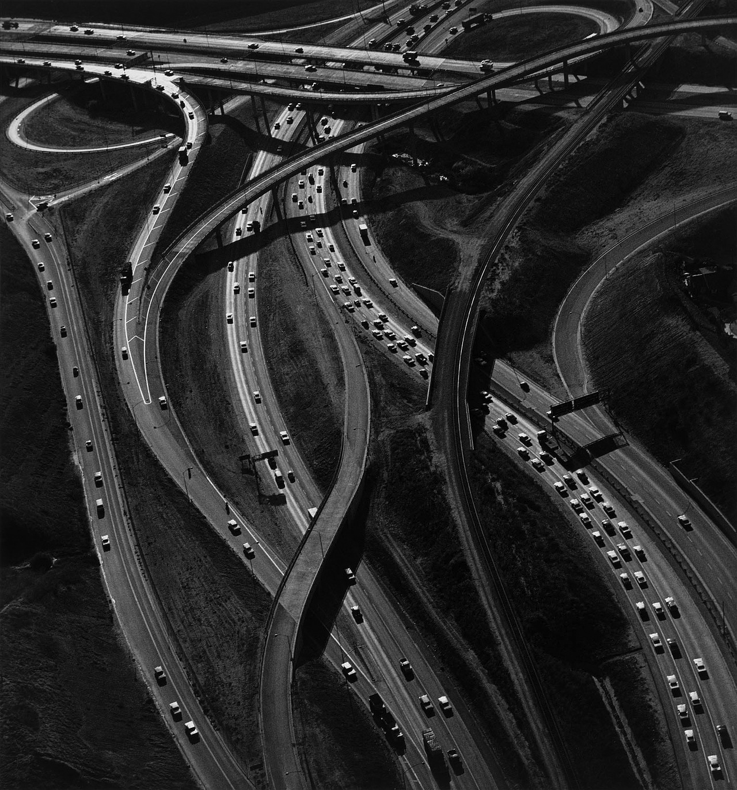

Photographs begin with random observation. Successful capture yields a photosensitive strip or a RAW computer file, a pupa that through processing molts into gossamer-gleaming fine-art print, dye-ink on thick paper. At best this flat critter empowers people to observe what they could not previously see, adding new dimensions to the algebra of perceivable phenomena. A great photograph is an observation you immediately regret not having made yourself.

Interchange, Ansal Adams, 1967.
In 1967 Ansel Adams captured the octopean ridge-lines and octothorpe intersections of the San
Francisco freeway. Freeways are designed to simultaneously minimize both commute-time and net collision cost. The mathematical genesis of the freeway is similar to the wind-driven genesis of the Negev or the aquatic genesis of the Koshi River Basin. An external force erodes and extrudes a landscape to provide minimal resistance; the earth is sculpted. The photograph reminds the viewer that they have driven roads like these (if not these very roads) without observing the organic contours all about. The smart viewer is contrite, visually reprimanded for their bustle and inattention.
Interchange and
Roots are what great photography looks like. But how is great photography made? The
recipe is superficially simple. The stochastic step: Ansel notices the roots of a tree. The judgment step: Ansel evaluates his observation. The deterministic step: Ansel is a classically trained photographer. He works his trusty Mamiya with the easy fluency of Manfred von Richthofen flying the Rotes Flugzeug. The first step is easy and the third step can be learned. The intermediary judgment is in contrast a skill rarer than Esperanto fluency.
■■■■■■■ ■■■■■■■■’s craftsmanship is superb. Her use of shadow (at a technical level, her choice of shutter speed, lens, and film) communicates the shuffling shivering incandescence of the White Mountain woods. I remember Emerson wrote of the silent symphony of snow; ■■■■■■■ masterfully grabs the shifting snare-buzz of hemlock on conifer. Her focal depth deliberately blurs the subject’s hair, so that the hair of the subject and the stems of the trees are equally engrossed in their windy tango. ■■■■■■■ nails steps 1 and 3. But I don’t think the observation is all that interesting. Everyone knows coeds pondering wild vistas are aesthetically pleasing. I myself have observed this. So is ■■■■■■■■■■■■■■ a great photograph? I don’t think so; it certainly does not inspire contrition, like
Interchange does, nor introspection, like
Roots does. Then does it matter that I spent equally long pondering each of these photographs? Yes, I think so: ■■■■■■■ was not time well-spent.
We should discuss the phenomenology of beauty. (To channel Emerson, of
grace.) The projection of words like
good,
great, and
bad onto the space of photographs implies a sort of moral judgment, and indeed, I am being morally judgmental. Great photographers are philanthropists, their photographs monetary units given within an economy of perception.
Interchange makes the viewer permanently more perceptive. Great photography helps us to see all the beauty in the world. Conversely, less-than-great photography distracts from this grace. It says, beauty exists
precisely where you already think it exists. On wild bluffs and granite mountains. It calluses our eyes to subtle phenomena.
There exists a utility-calculus for time. I don’t know what this calculus is exactly but I’m sure it
exists. For example: time spent reading
Pale Fire is superior to time spent reading IKEA instructions. Nietzsche wrote about this in
On The Uses and Disadvantages of History for Life, offering to trade his life many times over for just a couple hours of conversation with Goethe. One of Nietzsche’s most repeated ideas is that some people hold the potential for monumental accomplishment whereas others do not. Although both self-serving and grandiose the idea has legs.
The Talmud makes a similar claim: Adonai does not anticipate when we will reach sufficient harmony to trigger the Big Day, and so places a potential messiah in every generation, a sleeper-agent able to lead when the rest of us behave well enough to deserve it. Let us reduce this concept to an actionable scale. Each of us is endowed with some pseudo-organic potential, a kind of maximum-accomplishment that our organs and socio-historical orbit could possibly propel us to. Just as a
1971 De Tomaso Pantera is not physically capable of exceeding 200 mph, no matter the tail-wind or fuel octane-content, I likely do not possess the measurable gray-matter needed to become the next Mozart, no matter the effort I invest. If we denote by Super-Max the maximally successful Max that I might hypothetically become, the moral question becomes: to what degree does the use of 1 minute of my time to seriously consider this photograph deviate my chronological trajectory from eventual asymptotic coincidence with Super-Max?
Super-Max might be a janitor. Perhaps that is all I am capable of becoming. And what shame is
there in janitorial work? None. At least a janitor is employed! Socrates was a homeless vagrant. In this case I should strive to embody janitorial excellence.
The Knapsack Problem is a classic algorithm design question and goes as follows: you have a knapsack that can fit \(X\) lbs of material. You are confronted with \(N_R\) rubies, \(N_D\) diamonds, and \(N_G\) bars of gold. Rubies, diamonds, and bars of gold are worth \(R\), \(D\), and \(G\) dollars, respectively. You cannot cut any ruby, diamond, or bar of gold into multiple pieces. What combination of loot will yield the maximum profit? At this point you have earned the money: you shot the bank up, kicked down the door, and cracked the combination lock. A non-optimal knapsack is equivalent to assembling the optimal knapsack and then getting robbed by your compadre after escaping the police on jet-skis through the Venetian sewer-system. A non-optimal knapsack is an affront to the American entrepreneurial spirit and an increase in angular deviation between your real self and your best self.
I’m standing in a chronological bank-vault, done up like Eli Wallach in a black face-mask and
striped T-shirt, mother-of-pearl handled revolvers on each hip, and a Stetson hat on my dome. My knapsack algorithm will decide how close I come to evolving into Super-Max. A wasted minute seems like no big deal. I can fit at least
878,592,959.99
useful minutes in my (highly practical) robbery knapsack. But a wasted minute must be compared to an optimal minute, which might add to the net value of my knapsack. From this perspective, a wasted minute is robbery. (In my robbery metaphor, it’s bank robbery robbery. Meta-robbery.) A wasted minute is a phone number that Yossarian throws down the drain. A wasted minute is a wrong turn in a random walk across the convex hull of my personal potential.
The clock is ticking. I grab
Moon Over Juarez and make a dash for it.